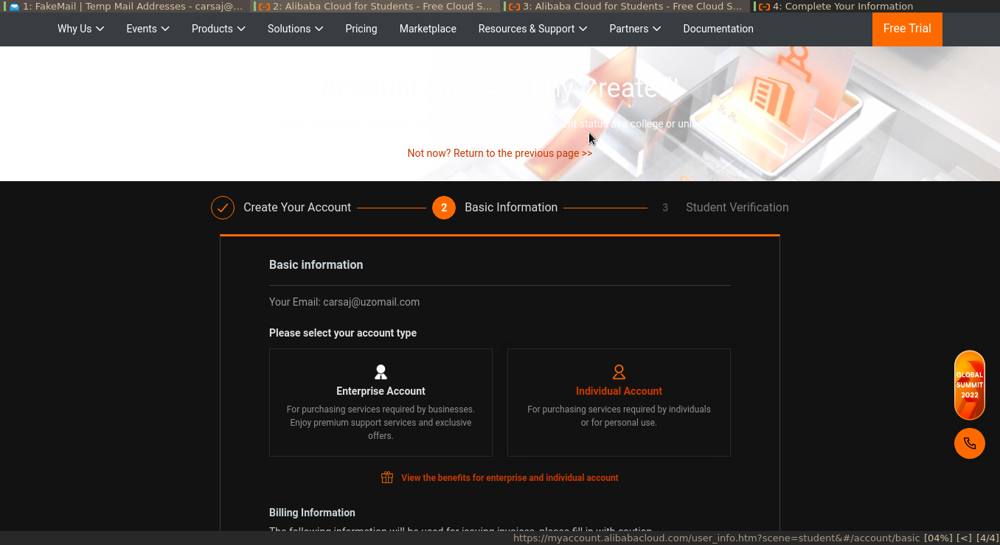
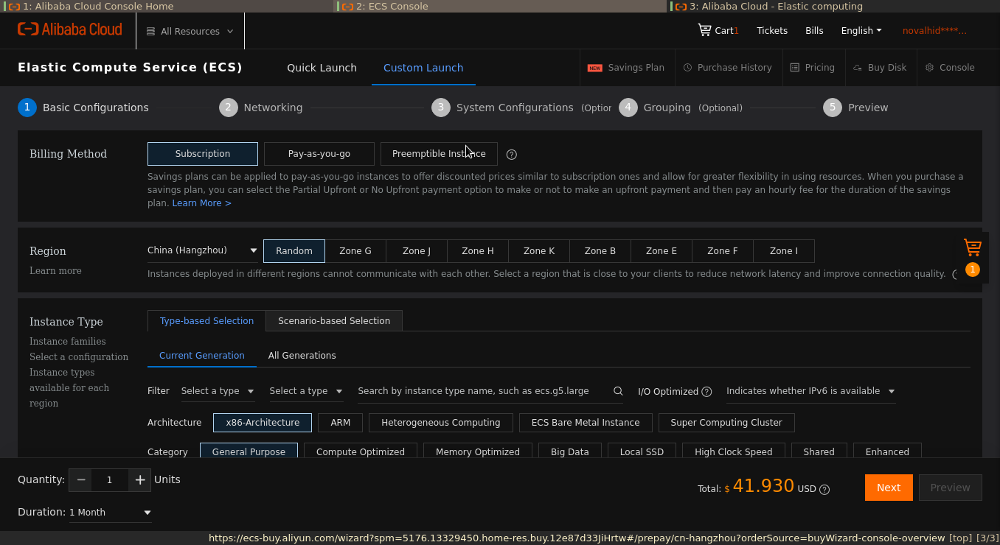
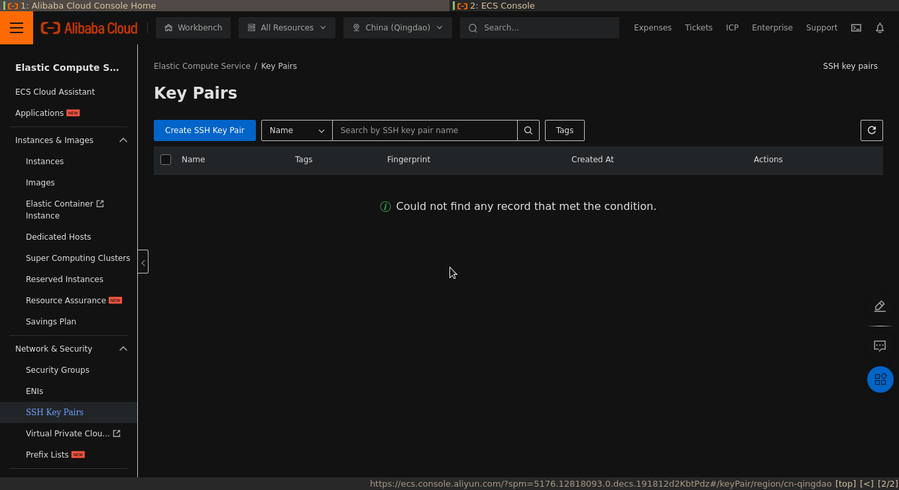

Linux Upskill Challenge: Day 0
Table of Contents
Intro
this blog is part of the linux upskill challenge series. contains notes of my learning process in following the [linux upskill challenge] guide(https://github.com/livialima/linuxupskillchallenge)
I have been struggling with linux for 3 years since 2019 until now, from learning the gui to the cli, from running desktop manager to window manager, from ubuntu to archlinux (well although I know archlinux isn’t really that difficult), my long journey to bash scripting. all the trips were really fun and unknowingly became my interest in the world of work, even though my education background is not related to that.
today I want to improve my skills in the linux world, well.. you must know to be sysadmin an acronym for system adminstrator, For those who don’t know, a sysadmin in short is someone who is responsible for managing the system, maintaining and also operating the server system.
in searching for sources of my learning process which incidentally is a self-taught, I found a github repo that provides learning to start becoming a sysadmin, namely linux upskill challenge which contains 20 learning titles that were previously paid online server admin linux courses - now free to learn. let’s get started!
Day 0 : Creating Your Own Server
first we enter day 0, to become a server admin of course we must have or be able to access the server itself, out there are many providers free servers for 1 month to 12 months, including aws, google cloud, alibaba cloud, azure, oracle, ibm, and many more. here I will use alibaba cloud as my playground in entering the world of sysadmins.
why i prefer alibaba cloud over others? because alibaba provides alibaba educate which is intended for students to learn server or alibaba cloud itself, the benefits obtained when using alibaba educate are. (this is not an endorsement)
- You can freely access the provided cloud server, for 1 year, with the following vm specifications.
- One core CPU
- Linux OS
- 1 Gb RAM (Random Access Memory)
- 40 Gb Ultradisk
- 1 Mbps Bandwith which is enough for learning. (not recommended for production use)
- Free training and certificate for one year
- no need for credit card or debit card
lucky students from Indonesia, alibaba provides alibaba educate for region Indonesia which after registering is valid for one year starting from that, therefore I prefer alibaba over others.
Register Alibaba Cloud
Requirements
the alibaba cloud registration process is relatively easy we only need an e-mail and password, and because it’s for students, which one not old enough to have a credit/debit card, so we don’t need a credit card or debit card instead we need documents verification related to our school institution. For example, student cards, student ID cards or it could be a credit sheet.
Create New Account
- click the following link to register to alibaba cloud register alibabacloud
- Click Sign Up Now under the sign form
- select individual account then next

- enter your email and create a password click sign up (step 1 of 2)

- Enter the OTP code sent via e-mail or mobile number
- Enter your additional information, pay attention to the form marked
*, it means that this field is mandatory. when finished you will be directed to the alibaba cloud dashboard page.  - go to menu and search for elastic compute service (ecs) click create instance
- after it looks like the picture below, do not change anything except certain fields that must be filled. 
- ok now you have a server.
create ssh key
Well, now that you have an active server for a year, it’s time to dive into the server. we will create ssh key pair
open your terminal, enter the command:
ssh-keygen -t ed25519 -a 100
-toption to select key type-aoption key derivation function (increases immunity against brute-force cracking when keys are stolen)
the resulting output will be like this
$ ssh-keygen -t ed25519 -a 100
Generating public/private ed25519 key pair.
Enter file in which to save the key (/home/novores/.ssh/id_ed25519):
enter the desired key location path (by filling absolute path). press enter will directly save the key in the directory /home/novores/.ssh/id ed25519
make sure the key was generated successfully by checking into the location where the key was stored. because we generate key to connect between remote machine
with local machine then in the directory where the keys are stored, you will see 2 pairs of key names, one with a .pub ending and one without. Now, the ending is .pub. This is what you will use later on into the remote machine, by copying the contents of the file into the ecs console.
Enter The Public Key (.pub) Into The ECS Console
- go to ecs console
- in the left sidebar scroll down find ssh key pairs and click 
- make sure in the top tab select the server region that has been set previously, or can be seen on the dashboard, in my case malaysia (kuala lumpur). click create ssh key pair

- enter the name, in the creation type column select import, then copy the public key that has been created into the box provided
- tekan
ok
Make Config
create config directory
cd .ssh
vim config
then add and edit the configuration below into the config file
# Enter the alias of the ECS instance to connect to the instance by using an SSH key pair.
Host ecs
# Enter the public IP address of the instance.
HostName 121.196.**.**
# Enter the port number. The default port number is 22.
Port 22
# Enter the logon account.
User root
# Enter the address of the private key file on your PC.
IdentityFile ~/.ssh/id_ed25519
Login to Server
with the config above it will make it easier for us to enter the server, we only need to type the ssh command along with the alias (the configuration above the alias is ecs)
ssh ecs
voila!! it’s time to be a sysadmin
in the next day I will try to dive into the server with basic commands.